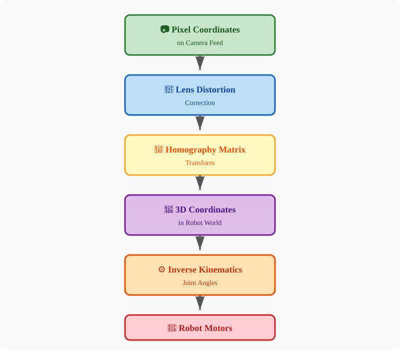
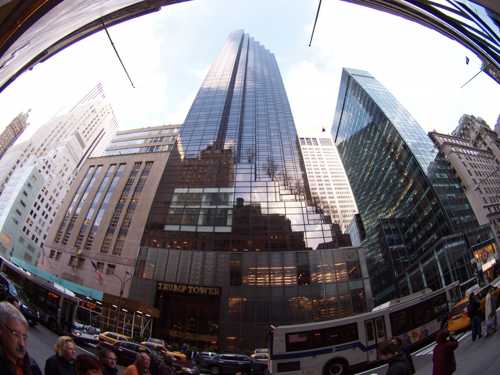
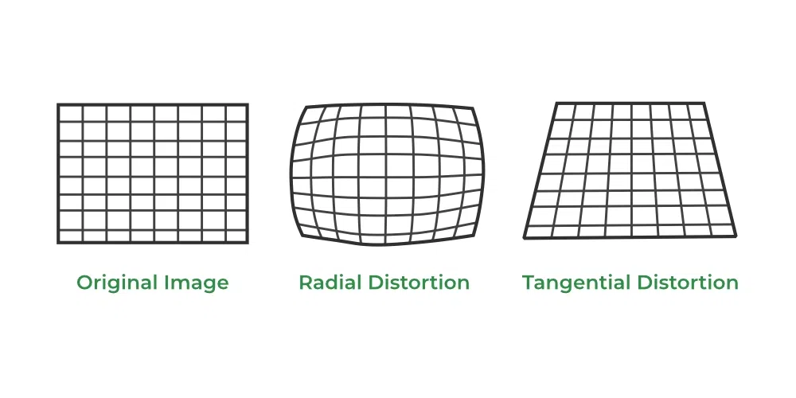
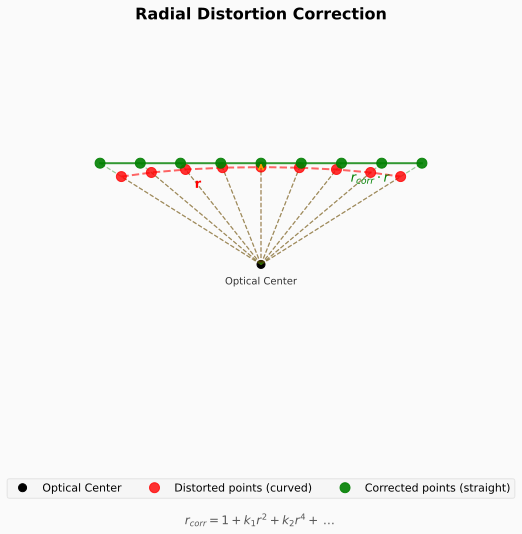
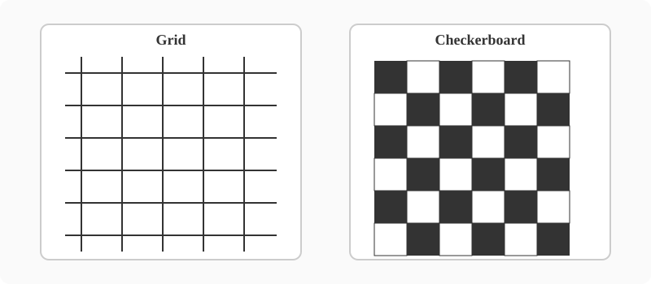
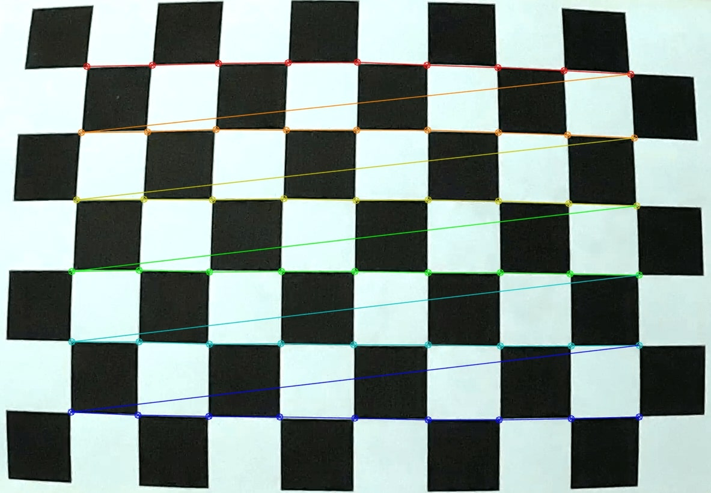
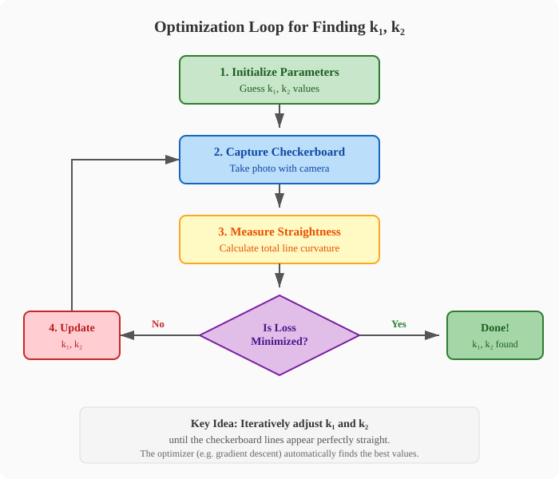
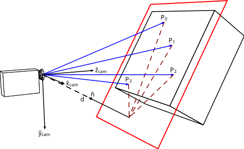
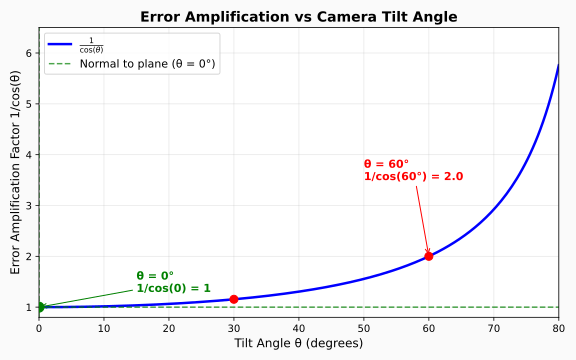
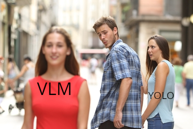

Lens Distortion Correction, Homography & VLM Object Detection
In this lesson, we will cover three key topics to build a click-to-pick pipeline:
In this lesson, you will learn how to build this pipeline yourself!

Camera lenses introduce geometric distortions that cause straight lines in the real world to appear curved in the image.

This affects the accuracy of pixel-to-world coordinate mapping!
There are two main types of lens distortion:
1. Radial Distortion
2. Tangential Distortion
Note
We will explain later why tangential distortion can be safely ignored in our setup.

Radial distortion comes in three common forms:
Barrel Distortion
Pincushion Distortion
Mustache Distortion

We model radial distortion using a polynomial with coefficients k₁, k₂, k₃, …
Given a distorted normalized point \((x_d, y_d)\), we compute the radial distance:
\[r^2 = x_d^2 + y_d^2\]
The distortion correction factor is:
\[r_{corr} = 1 + k_1 r^2 + k_2 r^4 + k_3 r^6 + \dots\]
The undistorted coordinates are then:
\[x_u = x_d \cdot r_{corr}\] \[y_u = y_d \cdot r_{corr}\]
Note
For most lenses, using only k₁ and k₂ is sufficient. Higher-order terms (k₃, …) are only needed for fisheye lenses.
To find the distortion coefficients, we need a reference object with known straight lines.

A checkerboard or grid pattern is ideal because:
The simplest approach is to manually adjust k₁ and k₂ until the camera feed looks correct.
How it works:
Warning
This method is time-consuming and requires trial-and-error. It also depends on human judgment of “straightness.”
Watch how adjusting k₁ and k₂ straightens the curved lines.
Modern computer vision can automatically calculate k₁ and k₂ from a single checkerboard image.
How it works:

Question: The equations for radial distortion are non-linear. If the parameters are very difficult to calculate analytically, how should we find them?
Think back to previous lectures…
Recall
What approach do we use when we have:
Just like tuning neural network weights or IK joint angles, we use an optimization loop to find the best k₁ and k₂.

The optimizer iteratively adjusts k₁ and k₂ to minimize the total line curvature.
| Manual Tuning 🔧 | Automatic Calibration 🤖 | |
|---|---|---|
| Speed | ⏱️ Slow (trial & error) | ⚡ Fast (seconds) |
| Accuracy | 👁️ Depends on human eye | 📐 Mathematically precise |
| Setup | ✅ No extra code needed | 💻 Requires calibration algorithm |
| Robustness | ⚠️ Subjective | ✅ Reproducible results |
Why still keep manual tuning?
Note
Best practice: Use automatic calibration first, then manually fine-tune if needed.
A homography is a transformation that maps points from one plane to another.
In robotics vision, it lets us convert 2D pixel coordinates from the camera into 2D coordinates on the robot’s working table.
Why we need it:

The homography is represented by a 3×3 matrix \(\mathbf{H}\):
\[ \mathbf{H} = \begin{bmatrix} h_{11} & h_{12} & h_{13} \\ h_{21} & h_{22} & h_{23} \\ h_{31} & h_{32} & h_{33} \end{bmatrix} \]
Given a pixel \((u, v)\), we find its world position \((x, y)\) on the plane:
\[ \begin{bmatrix} x' \\ y' \\ w' \end{bmatrix} = \mathbf{H} \begin{bmatrix} u \\ v \\ 1 \end{bmatrix} \]
\[x = \frac{x'}{w'}, \quad y = \frac{y'}{w'}\]
This maps any 2D camera point to a 2D point on the robot’s table plane!
Homography can only map between 2D planes. It does not give us true 3D depth.
What homography CAN do:
What it CANNOT do:
Note
For our SO101 robot, this is fine! We mostly care about where objects are on the flat working table.
To compute \(\mathbf{H}\), we need 4 known point pairs:
The 4 points should not be collinear — spread them to the corners of your workspace for best accuracy.
Each point pair gives two linear equations. With 4 points (8 equations) and 8 unknowns (since \(h_{33}=1\)), we can solve \(\mathbf{H}\).
For one correspondence \((u, v) \leftrightarrow (x, y)\):
\[ x = \frac{h_{11}u + h_{12}v + h_{13}}{h_{31}u + h_{32}v + 1} \]
\[ y = \frac{h_{21}u + h_{22}v + h_{23}}{h_{31}u + h_{32}v + 1} \]
Rearranging into linear form \(Ah = 0\):
\[ \begin{bmatrix} -u & -v & -1 & 0 & 0 & 0 & xu & xv & x \\ 0 & 0 & 0 & -u & -v & -1 & yu & yv & y \end{bmatrix} \begin{bmatrix} h_{11} \\ h_{12} \\ h_{13} \\ h_{21} \\ h_{22} \\ h_{23} \\ h_{31} \\ h_{32} \\ h_{33} \end{bmatrix} = 0 \]
Solution: Take the SVD of \(A\); the eigenvector for the smallest singular value is \(\mathbf{H}\).
For the most accurate mapping, the camera should look straight down at the table (normal to the plane).
Why? When the camera is tilted, perspective distortion stretches the image unevenly:
The error amplification factor grows with tilt angle \(\theta\):
\[ \text{Position Error} \approx \frac{\Delta_{pixel}}{\cos(\theta)} \]
At \(\theta = 0°\) (normal): 1-pixel error stays 1 pixel
At \(\theta = 60°\): 1-pixel error becomes 2× larger
The closer to normal, the smaller the amplification!
Tip
Tip: Mount your camera as close to overhead as possible for the most stable homography.

Watch how 4 clicked points define the mapping from camera pixels to robot table coordinates.
Important: If anything moves, \(\mathbf{H}\) becomes invalid and must be recalculated.
Recalibration is needed when:
Warning
Always verify your homography before running autonomous pick-and-place!
Remember we said tangential distortion could be ignored? Here’s why:
Tangential distortion is caused by the lens not being perfectly parallel to the image sensor. It creates a small skew in the image.
However, the homography matrix already captures the full perspective transformation between the camera plane and the robot’s table plane — including any skew or misalignment.
Key Insight
The homography \(\mathbf{H}\) is flexible enough to absorb both:
So we only need to explicitly correct radial distortion; tangential effects get handled automatically when we compute \(\mathbf{H}\).
With distortion correction and homography in place, we can now click anywhere on the camera feed to pick or place objects.
Alternatively, a Vision-Language Model (VLM) can automatically create a bounding box to decide where to pick.
VLMs understand text instructions and can select objects based on spatial relationships.
Example: “Pick up the middle box” — the VLM correctly identifies which object to grasp.
VLMs can also filter objects by color or other visual attributes described in natural language.
Example: “Pick up the black pen” — no need to train a separate color detector.
A major advantage of VLMs is the ability to target specific parts of an object.
Example: “Pick up the screwdriver by the handle” — the VLM boxes only the handle region, letting the gripper grasp optimally.
Traditional object detectors like YOLO can only output predefined classes and bounding boxes. VLMs understand context, text, and natural language.
What VLM can do that YOLO cannot:

Despite VLM’s flexibility, traditional detectors like YOLO are still essential:
| YOLO / Traditional OD | VLM | |
|---|---|---|
| Speed | ⚡ Real-time (30–100+ FPS) | 🐌 Slow (seconds per frame) |
| Cost | ✅ Free, runs locally | 💰 API costs per request |
| Consistency | ✅ Deterministic output | ⚠️ Can vary between calls |
| Internet | ✅ Offline capable | 📶 Requires network |
| Setup | ⚠️ Needs training data | ✅ Zero-shot capability |
Best practice: Use YOLO for fast, reliable detection of known objects. Use VLM when you need flexibility, language understanding, or reasoning about unseen items.
VLMs are not perfect. They can miss obvious visual cues like warning signs.
Even with a big warning sign, the VLM still wants to pick up the knife!
This shows the importance of system prompts and safety guardrails.
The VLM ignored the warning sign because its system prompt did not include safety instructions.
Your task:
Example Prompt Addition
“If you see a warning sign near an object, do not pick it up. Prioritize safety over task completion.”
Discussion: What other safety rules should the robot follow?